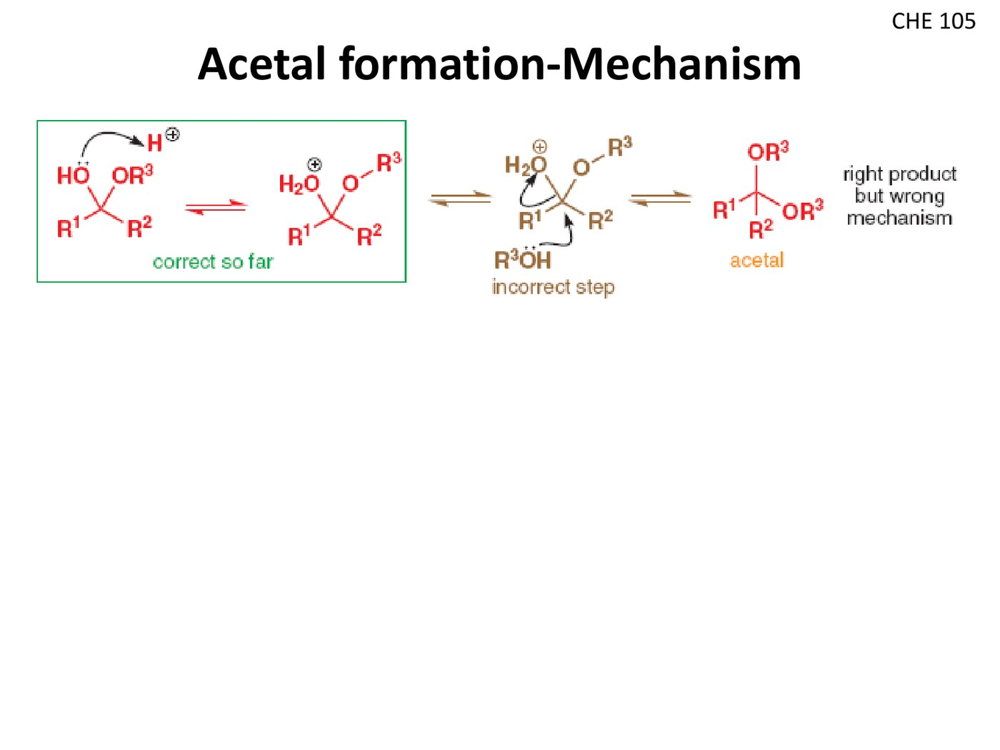

CHE105 · 第 12 章
羰基氧的取代：缩醛、亚胺与 Wittig
Nucleophilic Substitution at the C=O with Loss of the Carbonyl Oxygen
虚线下划线为术语；悬停查看中文、英文与释义，完整词典见“术语”。
本章目录
本讲处理“羰基氧被换掉”的一类反应：醇把它换成两个烷氧基（缩醛），胺把它换成 C=N（亚胺、烯胺），还原胺化再把 C=N 还原成 C–N。三种产物共用同一条“加成—脱水”的骨架。
本章要点
- C=O 上有三类反应：亲核加成（保留氧）、加成型取代（换掉一个取代基）、失去氧的取代（换掉氧本身）。
- 水加成给 gem-二醇，醇加成给半缩醛；两者都是四面体中间体的“停点”。
- 半缩醛在酸催化下再脱一分子水、接第二个醇，得到缩醛；缩醛对碱与亲核体稳定，可作保护基。
- 伯胺加成后脱水给亚胺（C=N）；仲胺脱水给烯胺（C=C–N）。
- 亚胺的稳定性取决于 C=N 是否与芳环共轭；不稳定者会水解回羰基。
- 还原胺化 = 亚胺形成 + C=N 还原，是一步长出 C–N 键的常用路线。
- 缩醛与亚胺的机理同构：都是“加成 → 质子转移 → 脱水”，只是亲核体与最终产物不同。
12.1 羰基上的三类反应
讲义先用一组对比图把 C=O 上的反应分成三类。第一类是亲核加成nucleophilic addition：亲核体加到羰基碳上，氧保留在产物里，醛酮加醇给半缩醛、加水给 gem-二醇都属于这一类。第二类是第 11 章的加成型取代addition-substitution：加成之后四面体中间体排出原来的取代基，氧仍然保留（酰氯 → 酯）。第三类是本讲的新类型——连氧一起换掉的取代：加成之后不是排出一个取代基，而是把氧本身以水的形式带走，碳上换成氮或碳。
第三类的代表是缩醛（两个烷氧基取代氧）、亚胺（氮取代氧）、烯胺（氮取代氧并生成 C=C）与 Wittig 产物（碳取代氧）。它们的共同起点仍是四面体中间体，区别在中间体接下来“丢什么”。
把三类并排看，本章其实只在做一件事：把第 6 章学过的那一步加成，接到不同的“出口”上。出口由亲核体的性质决定，而不是由羰基决定。
L12 p.2–6
12.2 水加成：gem-二醇（复习）
水是最简单的亲核体。水以氧上的孤对进攻羰基碳，C=O 的 π 电子推向氧，形成四面体中间体，随后氧负离子被质子化，得到同一个碳上带两个羟基的产物，即 gem-二醇gem-diol。甲醛在水溶液中大部分以 gem-二醇形式存在；乙醛、丙酮的 gem-二醇则很不稳定，平衡偏向羰基形式。
机理的文字步骤：① 水氧的孤对 → 羰基碳；② C=O 的 π 键 → 氧，形成氧负离子；③ 氧负离子从水中或 H3O+ 夺取质子，得到第二个 OH。画箭头时注意第 ③ 步的方向：从氧负离子的孤对指向质子，而不是反过来。
gem-二醇之所以在本讲出现，是因为它是“四面体中间体可以稳定存在”的最简单证据。醛酮的加成之所以能停在醇，就是因为这个四面体没有可离去的基团；一旦换成酰氯（第 11 章），同一个四面体就会坍塌。
L12 p.7–9
12.3 醇加成：半缩醛（复习）
把水换成醇，产物是半缩醛hemiacetal：同一个碳上连一个 −OH 与一个 −OR。步骤与加水完全同构：① 醇氧的孤对 → 羰基碳；② C=O 的 π 键 → 氧；③ 氧负离子夺取质子，得到半缩醛。区别只在亲核体从 H2O 换成了 ROH。
半缩醛是糖类环化的关键中间体。讲义在糖的 Fischer 投影与环状结构之间建立联系时，用的就是“分子内的醇羟基进攻自己的羰基，形成环状半缩醛”这一步（第 9 章 p.23–24 的 hemiacetal）。这也解释了为什么糖在水溶液中以环状形式为主：分子内反应在熵上比分子间反应有利。
半缩醛的一个重要性质是不稳定：它既可以退回醛（脱水），也可以继续反应成缩醛。讲义紧接着用“半缩醛的分解”一页说明这个可逆性——它不是副反应，而是通往缩醛的必经之路。
L12 p.10–12
12.4 从半缩醛到缩醛
半缩醛的 −OH 在酸中被质子化成 −OH2+，水作为离去基团离开，碳上形成一个带正电的氧鎓离子oxocarbenium ion；第二分子醇进攻这个碳，再脱质子，得到缩醛acetal——同一个碳上连两个 −OR。总反应是醛 + 2 ROH ⇌ 缩醛 + H2O，酸催化，可逆。
推动平衡的手段是移除生成的水，或使用过量的醇。反过来，缩醛在含水酸中水解回醛，这也是它作为保护基可以被“拆除”的原理。
需要区分半缩醛与缩醛的稳定性：半缩醛有 −OH，可以继续脱水，也可以退回羰基；缩醛没有 −OH，碳上两个烷氧基，对碱、对亲核体、对氢化物都稳定，只有在酸性水溶液中才水解。这个“稳定性差”正是保护基策略的基础。
L12 p.13–14
12.5 缩醛形成的机理：五步与箭头
讲义用两页专门画缩醛形成的机理，可以拆成五步，全部在酸催化下进行。
① 质子化羰基氧：C=O 的 π 键电子对指向氧，氧再以孤对接住质子，羰基碳的正电性增强。② 第一分子醇进攻：醇氧的孤对指向羰基碳，形成四面体氧鎓离子（碳上连 OH、OR、R、R'）。③ 脱质子：氧上的质子被溶剂或另一分子醇夺走，得到半缩醛。④ 活化羟基并脱水：半缩醛的 −OH 被质子化成 −OH2+，水离去，同时氧的孤对推下来形成 C=O+（氧鎓离子）。⑤ 第二分子醇进攻并脱质子：醇氧进攻氧鎓碳，再失去一个质子，得到缩醛。
画箭头的三条纪律：质子化步骤的箭头从氧的孤对指向 H；进攻步骤的箭头从醇氧指向羰基碳、同时从 C=O 的 π 键指向氧；脱水步骤的箭头从氧的孤对指向碳（形成 π 键）、同时从 C–O 键指向离去的水。不要在一步里同时画“进攻 + 脱水”，那会把两面体中间体抹掉。

Clean vector five-step acid-catalyzed acetal formation mechanism drawn left to right: aldehyde protonated on oxygen, first alcohol attacking the carbonyl carbon giving a tetrahedral oxonium, deprotonation giving the hemiacetal, protonation of the hemiacetal hydroxyl and loss of water giving an oxocarbenium ion, second alcohol attacking and deprotonation giving the acetal, with curved arrows on every step and each intermediate labeled. Flat 2D, thin 1.5 px strokes, muted slate blue and warm grey palette, white background, English labels, no cartoon, no gradient, no shadow.
L12 p.15–16
12.6 缩醛作为保护基
把一个醛或酮变成缩醛，羰基就“消失”了：产物没有 C=O，不再能被亲核体进攻、不再能被氢化物还原、也不受碱影响。于是可以在分子其余部分做反应（例如用有机金属试剂、用氢化物还原、用强碱），最后再用含水酸把缩醛水解回羰基。这就是保护基protecting group策略。
讲义用两页示例展示这个过程：先形成缩醛，再做其他转化，最后酸性水解恢复羰基。选择缩醛作保护基的理由可以归纳成三条：形成条件温和（酸催化 + 醇）、对碱与亲核体稳定、拆除条件专一（只有含水酸）。
这里有一个与第 10 章呼应的细节：有机金属试剂是强碱，遇到 −OH 会先夺质子；如果分子里同时有羰基和羟基，直接加 RMgX 会两头出事。把羰基保护成缩醛，既避免了羰基被加成，也让分子在碱性条件下“安全”。
L12 p.24–25
12.7 伯胺加成：亚胺的形成
把醇换成伯胺primary amine（R'NH2），产物是亚胺imine：C=O 的氧被 =N–R' 取代，碳氮之间形成双键。总反应是醛/酮 + R'NH2 ⇌ 亚胺 + H2O。
机理与缩醛同构，但中间体不同：① 胺氮的孤对进攻羰基碳，C=O 的 π 键推向氧，得到一个两性离子型的甲醇胺carbinolamine（同一碳上带 OH 与 NH2R）；② 质子从氮转移到氧，得到中性甲醇胺；③ 羟基质子化后以水离去，形成亚胺离子iminium ion（C=N+H–R）；④ 氮上脱质子，得到亚胺。
反应需要“恰到好处”的酸度：太酸，胺被质子化成 −NH3+，失去亲核性；太碱，羰基氧难以质子化，水也走不掉。所以亚胺化通常在弱酸条件下进行，这与缩醛化的酸催化逻辑一致，但多了一层“保护胺的亲核性”的平衡。

L12 p.26–31
12.8 稳定与不稳定的亚胺；其他氨衍生物
并不是所有亚胺都能被分离出来。讲义用“稳定与不稳定的亚胺”一页作对比，判据可以归到两条：C=N 是否与芳环共轭，以及N 上的取代基是否提供位阻或共轭。C=N 与芳环共轭时，π 体系扩展、能量降低，亚胺较稳定（例如 N-芳基或 C-芳基亚胺）；脂肪族亚胺缺少这种稳定化，容易水解回羰基，也容易聚合。
氨的其它衍生物走同一套机理，只是亲核体换成了不同的 N–H 物种，产物名称随之改变：
- 肟oxime：羟胺（NH2OH）加成脱水，C=N–OH。
- 腙hydrazone：肼（NH2NHR）加成脱水，C=N–NHR。
- 缩氨基脲semicarbazone：氨基脲（NH2NHCONH2）加成脱水。
- 苯腙phenylhydrazone：苯肼（NH2NHPh）加成脱水。
这四种产物在结构上都是“C=N–X”，X 不同决定了稳定性与后续用途。它们的共同价值是把难结晶、难分离的醛酮变成固体衍生物，用于鉴定——这是经典有机定性分析的做法。
Clean vector side-by-side comparison of two pathways from the same protonated carbonyl: the upper branch shows an alcohol attacking to give a hemiacetal, then protonation and loss of water, then a second alcohol attacking to give an acetal with two OR groups; the lower branch shows a primary amine attacking to give a carbinolamine, then proton transfer, then loss of water to give an iminium ion, then deprotonation to give an imine with a C=N bond; both branches share the same starting aldehyde drawn once on the left with a split arrow. Flat 2D, thin 1.5 px strokes, muted slate blue and warm grey palette, white background, English labels, no cartoon, no gradient, no shadow.
L12 p.32–36
12.9 仲胺加成：烯胺
换成仲胺secondary amine（R2NH），机理走到亚胺离子就停不下来：氮上已经没有第二个氢可以脱去形成 C=N，于是相邻碳上的 α-氢被夺走，电子对推进来形成 C=C，得到烯胺enamine（C=C–N）。
步骤：① 仲胺氮进攻羰基碳，形成甲醇胺；② 质子转移；③ 羟基质子化、脱水，得到亚胺离子（氮上带正电、还有一个 N–H）；④ 碱夺走 α-碳上的氢，C–H 的电子对形成 C=C，同时 C=N 的 π 键电子落到氮上，得到中性烯胺。
烯胺的结构特征值得单独记住：氮的孤对与 C=C 共轭，所以氮是 sp2、C–N 键带部分双键性质（与第 7 章的酰胺同源）；富电子的 β-碳使烯胺成为亲核体，这也是它在合成中有用的原因。伯胺给亚胺、仲胺给烯胺，这条分流是本章最干净的对照。

L12 p.39–40
12.10 还原胺化：把 C=N 变成 C–N
还原胺化reductive amination把两件事接起来：先让醛或酮与胺形成亚胺，再用还原剂把 C=N 双键还原成 C–N 单键，最终产物是一个胺，碳骨架来自羰基化合物，氮来自胺。
机理分两段。第一段与 12.7 完全相同：胺加成、质子转移、脱水，得到亚胺或亚胺离子。第二段是还原：氢负离子（H−）加到 C=N 的碳上，氮接受质子，得到仲胺（若用伯胺）或叔胺（若用仲胺）。画箭头时，还原段的箭头从氢负离子指向 C=N 的碳，同时 C=N 的 π 键电子指向氮。
这条路线在合成上的价值是“一步长出 C–N 键”，且原料（醛酮 + 胺）都很易得。讲义的示例页展示了不同醛酮与不同胺的组合，以及分子内还原胺化生成环状胺的情形。讲义没有在提取文本中给出还原剂的具体名称与条件，这部分以“亚胺形成 + C=N 还原”的两段式理解为准。
L12 p.41–45
12.11 视觉中的亚胺
讲义用一页“亚胺与视觉化学”把两者连起来。第 7 章已经给出这条线索的前半段：视黄醛retinal吸收光子后发生光致异构化photoisomerization，由全反式变为顺式。本章补上的信息是：在视觉化学中，视黄醛是以亚胺（C=N）的形式存在的，而不是以游离醛的形式起作用。
于是“光致异构化”不再是孤立的光化学事件：它发生在一个 C=N 参与的结构上，构型改变带来分子形状改变，进而传递信号。这也解释了为什么亚胺的稳定性在本章被单独讨论——C=N 既要足够稳定以维持结构，又要在合适的时候能水解，平衡由所处的环境调节。讲义在这一页只给到“亚胺参与视觉化学”这一层，具体的蛋白与残基名称本课程资料未提供。
从化学角度看，这个例子把本章的三个概念串在一条线上：羰基 + 伯胺 → 亚胺（12.7）；亚胺的稳定性（12.8）；共轭体系吸收光（第 7 章）。这是全课程里“结构—反应—功能”连接得最漂亮的一处。
L12 p.32；L7 p.3
12.12 Strecker 合成与 Wittig 反应：讲义目录中的两项
讲义的目录（p.1）在第 12 讲的目标里列出了两条本章正文没有展开的内容：Strecker 氨基酸合成与 Wittig 反应。提取出的幻灯片从 p.1 直接进入“加成与取代”的总览，之后是缩醛、亚胺、烯胺、还原胺化，没有对应的机理页。
因此这两项在本站按“本课程资料未提供”处理：不写机理、不写试剂、不写示例，避免用课外内容填充。复习时若考试涉及，应以课堂上补充的讲义或板书为准，而不是从本章推断。
能确定的只有主题归属：两者都出现在“羰基上的取代”这一讲的目标里，与本章“把 C=O 的氧换掉”的主线并列。至于它们各自的中间体、试剂与步骤，本讲义没有给出，本章不作展开。
L12 p.1、p.46